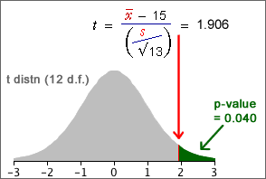

Finding a p-value from the t distribution
When testing the value of µ when σ is unknown, we use the test statistic

This has a t distribution (with n − 1 degrees of freedom) when H0 is true, so the p-value is found from a tail area of this distribution.
One-tailed test
H0 : μ = μ0
HA : μ < μ0
The steps for testing these hypotheses are shown in the diagram below.

Example
Consider a sample of n = 13 values with mean  = 16.14
and standard deviation s = 2.15. A test for whether the population mean
is more than 15.0 uses the hypotheses:
= 16.14
and standard deviation s = 2.15. A test for whether the population mean
is more than 15.0 uses the hypotheses:
H0 : µ = 15
HA : µ > 15
Since the population standard deviation, σ, is unknown, the test must be based on a t statistic.
